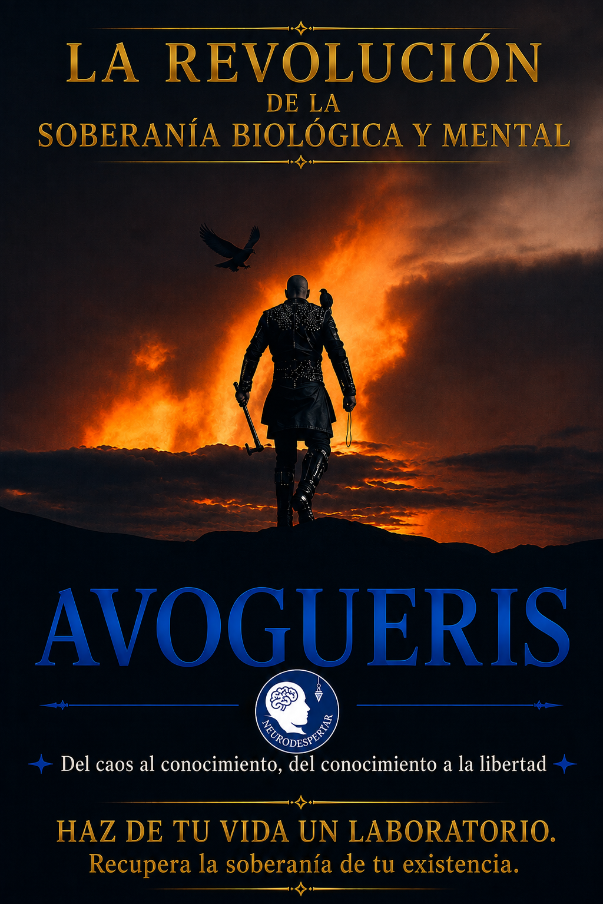
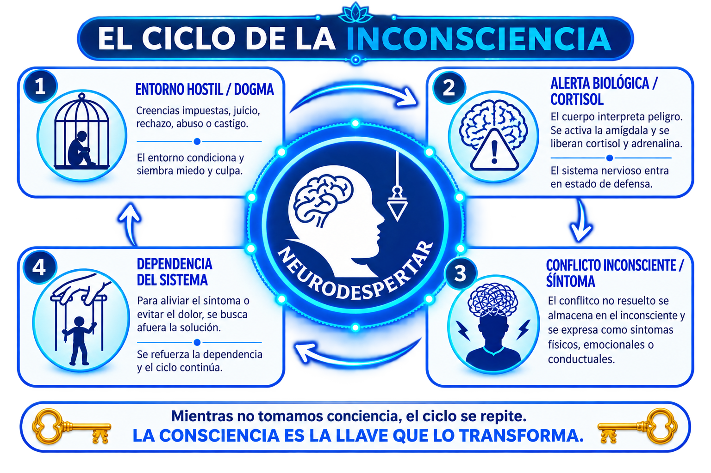
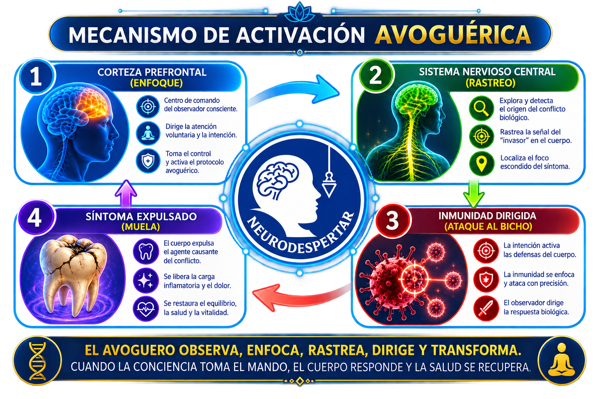
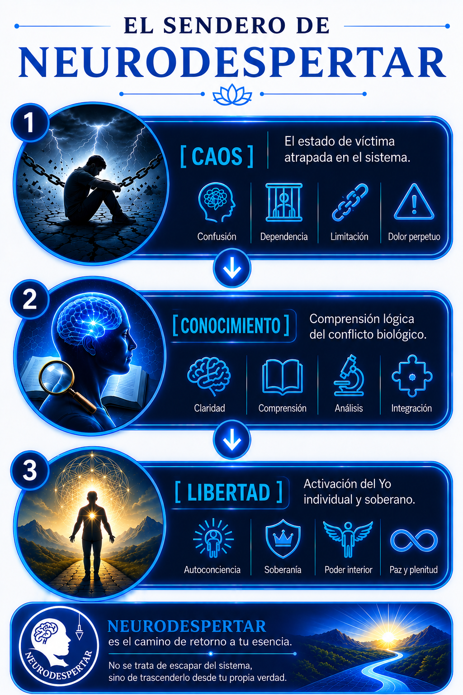

AVOGUERIS
La revolución de la soberanía biológica y mental
Haz de tu vida un laboratorio. Recupera la soberanía de tu existencia.
¿Y si aquello que llamaste destino fuera, en realidad, un código que nunca aprendiste a leer?
Durante años buscamos respuestas fuera de nosotros: en la familia, en las creencias, en el sistema, en los maestros y en quienes prometen mostrarnos el camino.
AVOGUERIS propone detener esa búsqueda y comenzar otra: la investigación de uno mismo.
A partir de una experiencia personal de transformación, este libro explora la relación entre conciencia, sistema nervioso, conflicto, comportamiento e individualidad del Yo.
No encontrarás aquí una doctrina para seguir ni un maestro al que obedecer. Encontrarás preguntas.
Porque despertar no significa escapar del mundo. Significa recuperar la soberanía sobre tu propia existencia.
Del caos al conocimiento, del conocimiento a la libertad.
El método, explicado


